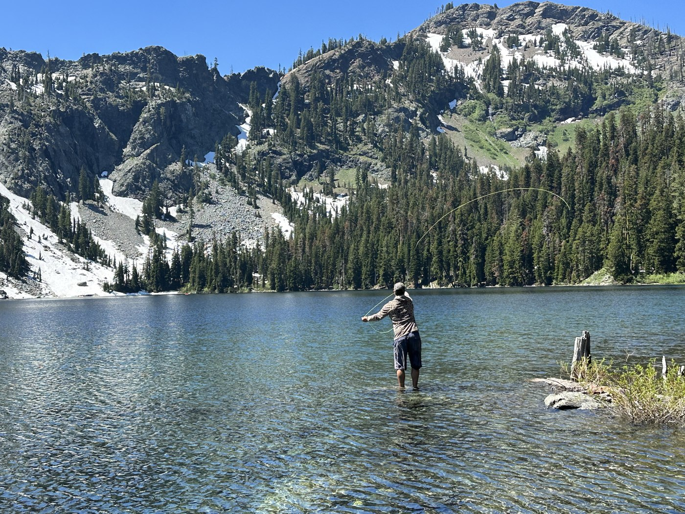
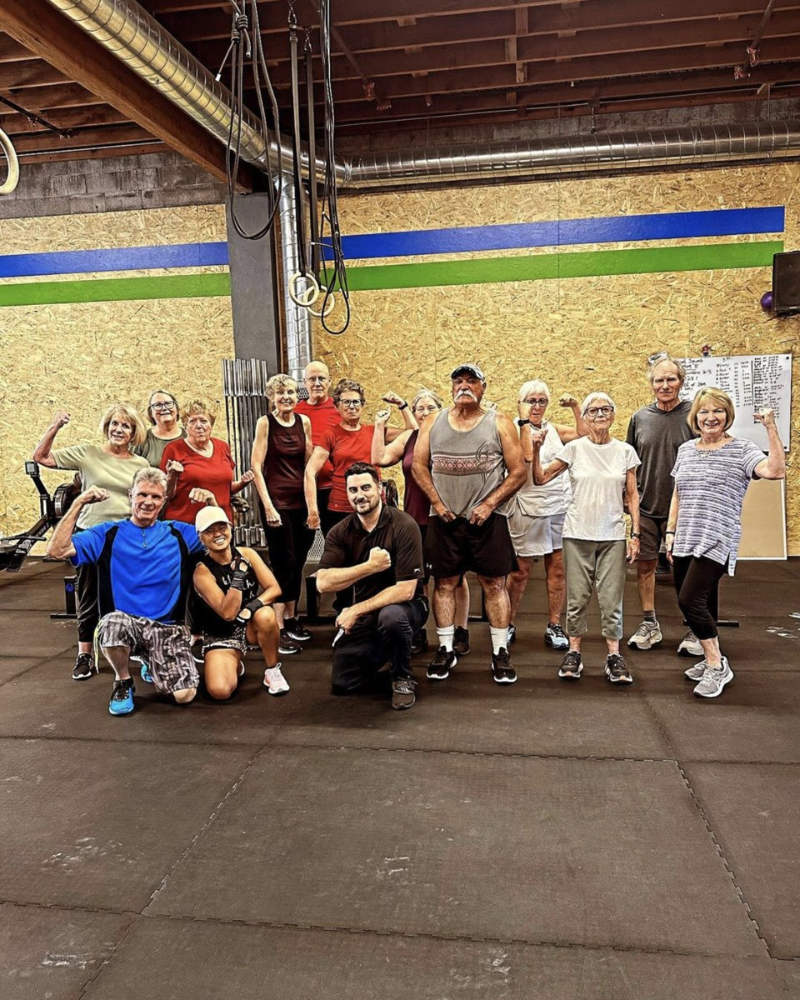

Mendocino Physical Therapy / Ukiah, California
Your Life Has
Places To Be.
A court. The front steps. The next round.
Pick what matters to you. We’ll help you find your way into the practice.
One-On-One PT · Fitness · Golf Performance
Your Way In
No Two Starting
Points Alike.
Choose an object above for care information, useful links and a question to start the conversation.
Your Destination Guide
Your Sport. Your Starting Point.
An injury changes the plan. Start with the movement you want back, then explore the care and people behind it.
Choose Another DestinationYour Destination Guide
The Front Steps Count, Too.
Getting out the door, feeling steadier, doing your day. Everyday movement deserves its own starting point.
Choose Another DestinationYour Destination Guide
A New Knee. Your Next Chapter.
Recovery has a starting point of its own. Explore the practice’s postoperative care information and prepare your questions for the office.
Choose Another DestinationYour Destination Guide
Look At The Body Behind The Swing.
A golf-specific way in: explore the TPI body screen, swing analysis and corrective exercise program described by the practice.
Choose Another DestinationPeople From Here
The People Behind Your Next Step.
Meet the team. Read their stories.
Meet The Whole TeamCare, In Plain Sight.
The Practice,
In Detail.
How We Work
Movement Is Medicine
Get back to moving pain-free.
A Unique Physical Therapy Experience
Whether you're recovering from surgery or striving for peak performance, we're here to support you every step of the way.
Restore Mobility
We specialize in restoring mobility and improving pain-free movement using advanced orthopedic manual therapy techniques and tailored exercise programs. Our hands-on approach focuses on addressing the root problem for each patient.
Fitness-Forward
We believe in a personalized, fitness-forward approach to physical therapy, delivered in a one-on-one setting. Our highly trained therapists develop exercise plans tailored to each patient's unique needs and goals.

Care Areas
Fitness & Community
Functional Fitness Classes
In addition to individualized therapy sessions, we offer functional fitness classes designed to enhance mobility, strength, and balance. Join our 55+ fitness class at Crossfit Firefly and experience the benefits of a supportive community and expert guidance in achieving your fitness goals.

Schedules, Classes & RegistrationYour Next Move
Talk It Through.
Appointments, classes or coverage. Call the office.